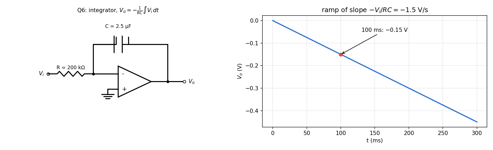

Basic Electrical Engineering › Tutorial 6 on OP-AMP
T6-Q6 — Op-Amp Integrator
EE1100op-amptutorial-solutionintegrator
Hub: Tutorial 6 on OP-AMP · Previous: T6-Q5 - Difference Amplifier · Next: T6-Q7 - Follower with Finite Gain
A steady voltage V is applied to the circuit of Fig. 6 with kΩ and F (capacitor in the feedback path). The capacitor is initially uncharged. Find 100 ms after the input is applied. [ V]
Tests: integrator, capacitor charging.
Given
V (DC), kΩ, F, , ms.
Principle and why it applies
The inverting node is a virtual ground, so the input current is (constant for DC) and the whole of it charges . The capacitor voltage is and (the capacitor's right plate is the output).
Solution
s. So
The output is a ramp of slope V/s.

Result
Check
Charge: A for 0.1 s gives C; V ✓. Dimensionally is volts ✓.
Trap / alternative
- It is not an RC exponential: the op-amp holds the input current constant, so the capacitor charges linearly.
- The ramp continues until the output saturates at the supply rail (about V after 8 s here). Real integrators add a large resistor across to stop DC drift.